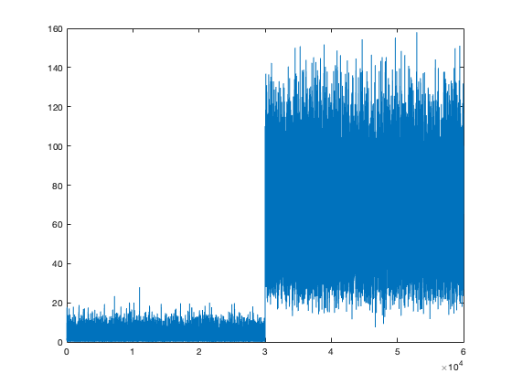
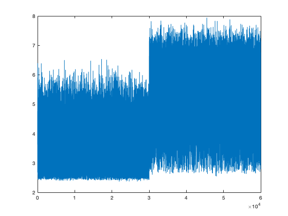
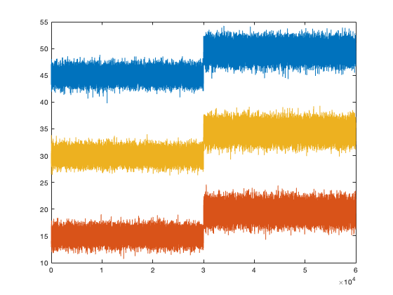

clc ;
clear ;
close all ;
sw = 10 ;
M = 3 ;
N = 30000 ;
AN = 30000 ;
MN = 30000 ;
KFN = 10 ;
AllN = 3000 ;
S_data = [45;15;30] ;
ch_to = unifrnd(-0.2,0.2,M,N) ;
normdata = S_data + randn(3,N) ;
ch_beto = unifrnd(3,6,M,AN) ;
addfault_data = S_data+ch_beto+randn(M,AN) ;
[N_data data_mean y_variance] = Nor_data(normdata) ;
sigma_y = N_data*N_data'/(N-1);
inv_Sigma_y = inv(sigma_y) ;
X = mean_matrix(normdata) ;
J_N_data = T_evaluation(N_data,inv_Sigma_y) ;
[dis_Rim C_data] = R_evaluation(normdata,X,sw);
N_addfault_data = y_variance*(addfault_data - data_mean) ;
J_N_addfault_data = T_evaluation(N_addfault_data,inv_Sigma_y) ;
[A_dis_Rim A_C_data] = R_evaluation(addfault_data,X,sw);
x = 1:(N+AN);
plot(x,[J_N_data J_N_addfault_data])
figure
plot(x,[dis_Rim A_dis_Rim])
figure
plot(x,[normdata addfault_data])
BL = MN/KFN ;
multifault_data = [];
for i = 1:KFN/2
rand_vec = unifrnd(-4,-2,3,1) ;
rand_cor = diag(rand_vec) ;
sigma_m = sigma_y+rand_cor;
R = randn(M,BL);
K_multifault_data=sigma_m*R+diag(data_mean)*ones(M,BL) ;
multifault_data = [multifault_data K_multifault_data] ;
end
for i = 1:KFN/2
rand_vec = unifrnd(2,4,3,1) ;
rand_cor = diag(rand_vec) ;
sigma_m = sigma_y+rand_cor;
R = randn(M,BL);
K_multifault_data=sigma_m*R+diag(data_mean)*ones(M,BL) ;
multifault_data = [multifault_data K_multifault_data] ;
end
multifault_data = multifault_data + randn(M,AN);
N_multifault_data = y_variance*(multifault_data - data_mean) ;
J_mulfault_data = T_evaluation(N_multifault_data,inv_Sigma_y) ;
[M_dis_Rim M_data] = R_evaluation(multifault_data,X,sw);
multifault_data1 = [];
for i = 1:KFN/2
rand_vec = unifrnd(-1,-0.5,3,1) ;
rand_cor = rand_vec*rand_vec';
sigma_m = sigma_y+rand_cor;
R = randn(M,BL);
K_multifault_data=sigma_m*R+diag(data_mean)*ones(M,BL) ;
multifault_data1 = [multifault_data1 K_multifault_data] ;
end
for i = 1:KFN/2
rand_vec = unifrnd(0.5,1,3,1) ;
rand_cor = rand_vec*rand_vec';
sigma_m = sigma_y+rand_cor ;
R = randn(M,BL);
K_multifault_data=sigma_m*R+diag(data_mean)*ones(M,BL) ;
multifault_data1 = [multifault_data1 K_multifault_data] ;
end
ch_to = unifrnd(-0.2,0.2,M,N);
normdata = S_data + randn(3,N) ;
allfault_data=multifault_data1+ch_beto ;
J_allfault_data = T_evaluation(y_variance*(allfault_data - data_mean),...
inv_Sigma_y) ;
[AM_dis_Rim A_data] = R_evaluation(allfault_data,X,sw);
  